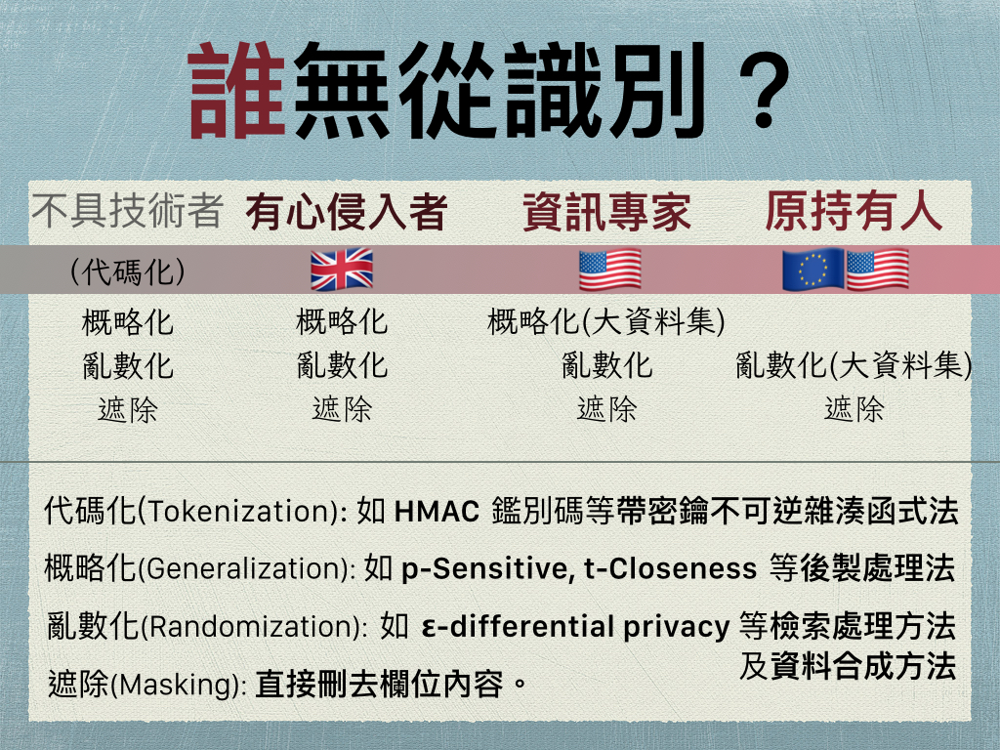

需求與建議
「個資利用與去識別化」是針對政府為公共利益之必要，發佈統計資料、提供學術研究時，採用「遮除、概略化、亂數化」等資訊技術，以充份保障人民隱私權、增進公眾互信的架構。實務上的建議，可簡列如下：
- 機關儲存源資料時，可將識別符代碼化（帶密鑰不可逆雜湊值）以增進資訊安全，並容許當事人事後申請註記為「排除特定目的外之利用」。因代碼化後之資料仍然含有隱私資訊，因此不應稱為「去識別化資料」。
- 為統計取樣用途，或向不特定公眾提供含任何個資之資料集時，應以「任何人（含原資料持有人）皆無從識別」為判準，釋出合成資料。
- 為學術研究用途，向特定研究者提供含特種（敏感）個資之資料集時，應以「資訊專家亦無從識別」為判準，按實際需求，採「資料最少原則」提供。
- 為學術研究用途，向特定研究者提供含任何個資之資料集時，應以「有心侵入者無從識別」為判準，按實際需求，採「資料最少原則」提供。
- 機關可將代碼化後之資料（不含密鑰，且限於未註記為排除特定目的外之利用者），委託第三方機構執行資料去識別化處理、向特定研究者揭露等事宜，但其執行方式應明確規範，並受公開監督。
- 概略化、亂數化技術之參數值應由個案討論訂定，全民健保研究資料庫應包含在首批個案研討內。

去識別化之目的
資料發佈原則
特種個資規範
個案指導方針
隱私影響評估
資料託管機構